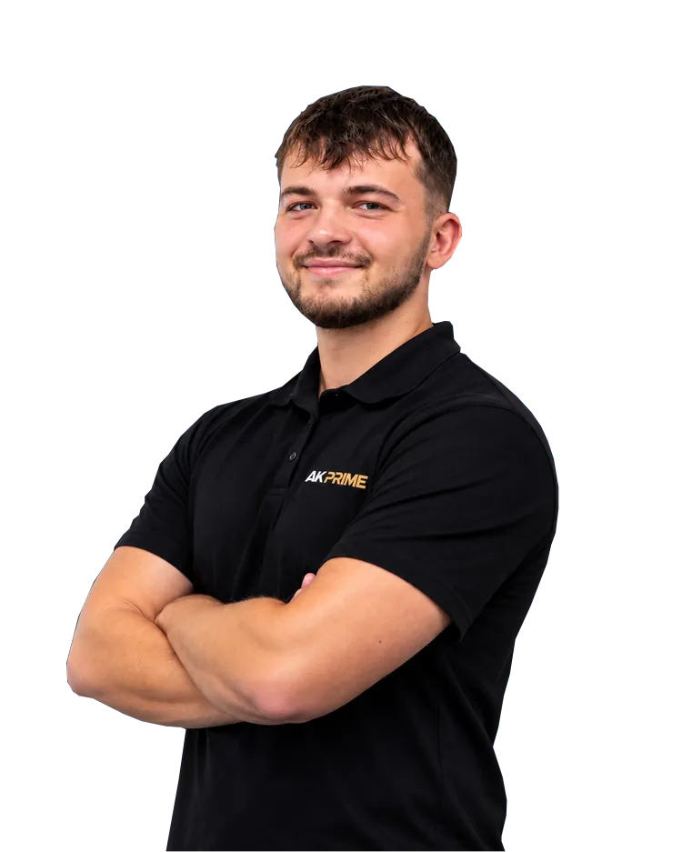

Plus de puissance
Puissance de frappe, explosivité des enchaînements et vitesse de bras, travaillées de façon ciblée.

Puissance, vitesse de bras, jeu de jambes, cardio sur les rounds, récupération entre les combats : AK PRIME construit votre préparation physique autour de vos séances de club et de votre calendrier de combats, en complément de votre coach.
Boxeurs accompagnés jusqu’au niveau pro au Corona Boxe · Master STAPS · 100 % à distance

Boxe anglaise, kick, muay thaï, MMA ou autre sport de combat : votre coach a déjà beaucoup à gérer avec la technique et la préparation des combats. AK PRIME s’occupe de votre physique, en lien avec lui.
Puissance de frappe, explosivité des enchaînements et vitesse de bras, travaillées de façon ciblée.
Un cardio et une capacité à répéter les efforts intenses construits pour la durée réelle de vos combats.
Une charge d’entraînement planifiée jusqu’au jour J, avec une récupération pensée entre les échéances.
Une démarche personnalisée, jamais une promesse de résultat identique pour tous.
Chaque cycle tient compte de votre discipline, de vos séances de club et de la date de vos prochains combats. Le physique est préparé pour servir votre boxe, pas pour la gêner.
Discipline, niveau, catégorie, volume d’entraînement, date des prochains combats et objectifs.
Tests réalisables à distance selon votre matériel : force, explosivité, capacité à répéter les efforts.
Cycles organisés autour de vos séances de club et de votre calendrier, avec une montée en puissance vers le combat.
Retours après chaque séance et suivi de la fatigue pour éviter le surentraînement avant l’échéance.
Ajustements selon vos sensations, vos retests et votre calendrier, avec analyse vidéo selon la formule.

Diplômé d’un Master STAPS en entraînement et optimisation de la performance sportive, Alex Kieffer a assuré la préparation physique de boxeurs jusqu’au niveau pro au Corona Boxe, et l’encadrement technique en boxe et en haltérophilie. Il a aussi préparé physiquement l’équipe pro féminine de football de Thonon Évian Grand Genève (Seconde Ligue) et travaillé en handball au niveau national.
Découvrir le parcours du coachRetrouvez ici les prestations essentielles. En cliquant sur une formule, vous accédez directement à sa fiche complète ou à la souscription sécurisée sur le site officiel AK PRIME.
Un programme structuré, des repères concrets et une autonomie accompagnée.
Un pilotage hebdomadaire plus fin de l'entraînement et de la récupération.
Un accompagnement rapproché lorsque les contraintes et la fatigue l'exigent.
Vous hésitez entre deux formules ? Le bilan découverte offert de 20 min sert justement à choisir ensemble, sans engagement. Les tarifs, conditions d’engagement, détails des prestations et démonstrations sont confirmés sur les cartes officielles AK PRIME, pour éviter toute information obsolète.
Vos données ne restent pas dispersées. Selon votre formule, le Passeport AK PRIME et Optitrainer permettent de retrouver les repères essentiels de votre préparation.
Un espace personnalisé pour retrouver votre accompagnement, selon les fonctionnalités prévues par la formule.
Les réponses aux questions que se posent le plus souvent les sportifs avant de commencer.
AK PRIME vient en complément de votre coach, pas à sa place. En boxe, le coach a déjà énormément à gérer avec la technique et les combats : la préparation physique individualisée travaille vos besoins à vous, comme la puissance, le jeu de jambes ou la récupération, en lien avec lui.
Non. La méthode s’adapte aux sports de pieds-poings et de combat : boxe anglaise, kick-boxing, muay thaï, MMA… Les exigences de votre discipline et la durée de vos rounds sont prises en compte dans la programmation.
Pas si c’est bien construit. La préparation vise la force utile au combat : puissance, explosivité et solidité, sans alourdir vos déplacements ni vous fatiguer avant vos séances de boxe.
La préparation physique tient compte de votre catégorie et de votre calendrier. Les formules Premium incluent un budget calorique et des macros, sans menus ; AK PRIME ne propose pas de prise en charge diététique ou médicale.
Vos séances sont sur l’application Optitrainer, vous faites vos retours après chaque séance, et nous faisons le point en visio selon votre formule. Vous pouvez envoyer des vidéos pour une analyse des mouvements.
Les formules Performance démarrent à 99 € par mois, avec un engagement minimum de 3 mois pour laisser le temps à la progression. Le bilan découverte de 20 minutes est offert et sans engagement.
20 minutes en visio pour faire le point sur votre niveau, vos objectifs et la formule la plus adaptée. Gratuit et sans engagement.